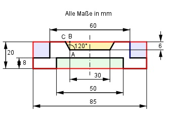

Aufgabe 100 Wie groß ist das Volumen V des 178 mm langen Profilstahls?  ∠CAB = 120° - 90° = 30° ∠ABC = 90° Im Dreieck ABC gilt: CB tan 30° = ---- |*AB AB CB = tan 30° * AB = 0,5774 * 6 mm = 3,46 mm Längere Trapezseite = 30 mm + 2 * 3,46 mm = 36,92 mm V = G * l G = Rechteck(rot) - Trapez (gelb) - 2 * Rechteck (blau) - Rechteck (grün) 30 + 36,92 85 - 60 G = 85 * 20 - ------------- * 6 - 2 * [(20 - 8) * (----------) - 50 * 8] mm² 2 2 G = 1 700 - 201 - 300 - 400 mm² = 799 mm² V = 799 mm² * 178 mm = 142 222 mm³ = 142,2 cm³